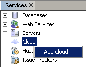
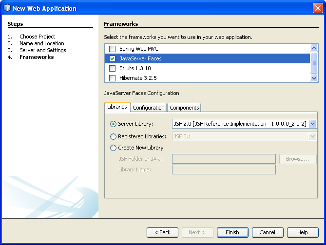
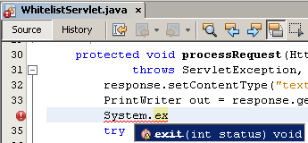

Apache NetBeans
Apache NetBeansLatest release
Запуск веб-приложений в Oracle Cloud
| This tutorial needs a review. You can open a JIRA issue, or edit it in GitHub following these contribution guidelines. |
- Загрузка Oracle Java Cloud Service SDK
- Установка подключаемого модуля Oracle Cloud
- Регистрация подключаемого модуля Oracle Cloud в IDE
- Просмотр заданий и журналов
- Удаленный сервер Oracle Cloud
- Разработка приложений на локальном компьютере
- Создание веб-приложения
- Создание приложения CRUD с JSF
- Тестирование поддержки соответствия белому списку
- См. также
Oracle Cloud - это корпоративная облачная среда для бизнеса. Oracle Cloud предлагает бизнес-приложения самообслуживания, поставляемые в интегрированной разработке и платформе внедрения со средствами для быстрого расширения и создания новых услуг. Подробнее об Oracle Cloud см. на домашней странице Oracle Cloud.
В этом документе описывается регистрация Oracle Cloud в IDE NetBeans и некоторые функции Oracle Cloud, которые поддерживаются в IDE. В этом документе рассматриваются некоторые преимущества и недостатки работы только с облачной средой по сравнению с работой с локальным сервером и последующим развертыванием в облачной среде. В конце создается простое веб-приложение согласно инструкциям в разделе Введение в веб-приложения и выполняется его запуск в Oracle Cloud.
Также рекомендуем ознакомиться со серией руководств Разработка Oracle Cloud с использованием NetBeans и Eclipse (OEPE) в блоге Java Training Beat.

Figure 1. Содержимое этой страницы применимо к IDE NetBeans 7.2, 7.3, 7.4 и 8.0
Для работы с этим учебным курсом требуется следующее программное обеспечение и ресурсы.
| Программное обеспечение или ресурс | Требуемая версия |
|---|---|
Версия 7.3, 7.4, 8.0, Java EE |
|
Подключаемый модуль Oracle Cloud |
Доступен из центра обновлений NetBeans с помощью диспетчера подключаемых модулей NetBeans |
версия 7 или 8 |
|
Служба Oracle Java Cloud |
Зарегистрируйтесь на домашней странице Oracle Cloud Public Availability |
Oracle Java Cloud Service SDK |
Загрузите с домашней страницы Oracle Cloud. |
Сервер Oracle WebLogic (для локальной разработки и тестирования приложений) |
Версия указана в главе 4 руководства пользователей по службе Oracle Java Cloud Этот документ можно просмотреть, выбрав 'Ресурсы' > вкладка 'Документация' + в активированной службе Java Cloud+. |
Сервер базы данных OracleXE (для локальной разработки и тестирования приложений) |
11g |
Загрузка Oracle Java Cloud Service SDK
Для разработки веб-приложений в Oracle Cloud требуется локальная копия Oracle Java Cloud Service SDK. Oracle Java Cloud Service SDK можно загрузить на домашней странице Oracle Cloud.
Для загрузки Oracle Java Cloud Service SDK:
-
Поместите окно браузера на домашнюю страницу Oracle Cloud.
-
Разверните раскрывающийся список Ресурсы в главном меню и щелкните Загрузки.
-
Щелкните Загрузить Oracle Java Cloud Service SDK в разделе Oracle Java Cloud Service SDK.
-
На странице загрузки Oracle Java Cloud Service SDK прочтите и примите условия лицензионного соглашения OTN для активации ссылки на загрузку.
-
Загрузите и извлеките SDK в локальную систему.
Установка подключаемого модуля Oracle Cloud
Чтобы включить поддержку службы Oracle Java Cloud в IDE, необходимо установить подключаемый модуль Oracle Cloud в центре обновлений NetBeans. Можно использовать диспетчер подключаемых модулей NetBeans для установки подключаемого модуля Oracle Cloud.
Для установки подключаемого модуля Oracle Cloud выполните следующие действия.
-
Выберите 'Сервис' > 'Подключаемые модули' в главном меню, чтобы открыть диспетчер подключаемых модулей.
-
Выберите вкладку 'Доступные подключаемые модули' в диспетчере подключаемых модулей.
-
Найдите и установите флажок для подключаемого модуля Oracle Cloud. Нажмите кнопку 'Установить'.
При щелчке 'Установить IDE' открывается программа установки IDE NetBeans. Для установки подключаемого модуля нужно выполнить действия, описанные в мастере установки.
После установки подключаемого модуля Oracle Cloud в мастере добавления поставщиков облачных услуг в списке поддерживаемых поставщиков облачных услуг будет отображаться Oracle Cloud.
Регистрация подключаемого модуля Oracle Cloud в IDE
Перед началом использования Oracle Cloud его необходимо зарегистрировать в окне 'Службы' IDE. Обратите внимание, что требуется отдельная установка SDK службы Oracle Java Cloud.
Примечание. Для работы с Oracle Cloud в IDE NetBeans требуется учетная запись пользователя в Oracle Cloud.
Чтобы зарегистрировать Oracle Cloud в IDE, выполните следующие действия.
-
Откройте окно 'Службы' в IDE ('Окно' > 'Службы' или Ctrl-5).
-
Щелкните правой кнопкой мыши узел Cloud и выберите пункт 'Добавить облако', чтобы открыть мастер добавления поставщика облачных услуг.

-
В поле 'Выбрать облако' выберите Oracle Cloud и нажмите кнопку 'Далее', чтобы открыть панель Oracle Cloud.

-
Заполните все поля. Перейдите к папке, содержащей файл JAR для Oracle Java Cloud Service SDK. Нажмите кнопку 'Далее'.
После нажатия кнопки 'Далее' IDE проверяет подключение к облаку. Если соединение прошло успешно, отображается перечень облачных служб. В настоящее время доступен только удаленный сервер Oracle Cloud (Oracle WebLogic).
Примечание. После регистрации поставщика Oracle Cloud можно изменить данные облака в его свойствах. Откройте окно 'Свойства', щелкнув правой кнопкой мыши узел Oracle Cloud и выберите 'Свойства'.
-
Убедитесь, что поставщик Oracle Cloud отображается в списке ресурсов облачных служб. Нажмите кнопку 'Готово'.
Сейчас Oracle Cloud указан в узле 'Облако' в окне 'Службы'. Можно щелкнуть правой кнопкой мыши узел Oracle Cloud, чтобы открыть контекстное меню, которое содержит команды для обновления списка служб, открыв список заданий и журналов и удалив экземпляр облака или просмотрев свойства облака.

При регистрации Oracle Cloud в IDE экземпляр узла удаленного сервера Oracle Cloud также отображается в узле 'Серверы'. (Если он не отображается, щелкните правой кнопкой мыши узел Oracle Cloud и выберите 'Обновить').

Можно развернуть удаленный узел Oracle Cloud, чтобы просмотреть список приложений, развернутых на удаленном сервере.
Просмотр заданий и журналов
Все запросы, передаваемые IDE NetBeans в Oracle Cloud приводят к созданию задания. Каждое задание имеет состояние (передано, запущено, сбой, завершено) и может иметь один или несколько файлов журналов (журнал проверки белого списка, журнал сканирования на антивирусы, журнал развертывания). Можно просматривать последние задания и их журналы с помощью действия 'Просмотр заданий и журналов'.
Щелкните правой кнопкой мыши узел Oracle Cloud и выберите 'Просмотр заданий и журналов'. В окне редактора отображается список последних 50 заданий и журналов. Его загрузка занимает несколько минут. Список заданий не обновляется автоматически. Нажмите кнопку 'Обновить', чтобы обновить список.

Удаленный сервер Oracle Cloud
Удаленный сервер Oracle Cloud представляет собой экземпляр Oracle WebLogic, запущенный в Oracle Cloud. Разверните узел удаленного Oracle Cloud и просмотрите список приложений, запущенных на этом сервере. Можно щелкнуть правой кнопкой мыши приложение, чтобы открыть контекстное меню, которое содержит команды для запуска, остановки и отмены развертывания приложения. Можно нажать в меню 'Просмотр', чтобы открыть домашнюю страницу приложения в браузере.

Чтобы обновить список развернутых приложений, щелкните правой кнопкой мыши узел удаленного узла Oracle Cloud и выберите 'Обновить'.

Разработка приложений на локальном компьютере
Мы рекомендуем выполнять разработку приложений на локальном компьютере и периодически развертывать их в облаке. Хотя вполне возможно выполнять разработку веб-приложений полностью в Oracle Cloud, локальная разработка является предпочтительным способом по следующим причинам.
-
Локальное развертывание занимает всего несколько секунд на запущенном сервере. Развертывание в облаке может занять несколько минут.
-
Поэтапное развертывание доступно только локально.
-
Отладка доступна только локально.
Также существуют риски, связанные с локальной разработкой и развертыванием в Oracle Cloud. Приложения, разработанные локально, могут не запускаться на удаленном сервере Oracle Cloud. Для обеспечения безопасности рекомендуется выполнять разработку локально на сервере Oracle WebLogic Server 11g, т.е. на том же сервере, что и удаленный сервер Oracle Cloud.
Необходимо вручную изменить сервер веб-приложений между локальным сервером и сервером Oracle Cloud. Не существует автоматического способа разработки на локальном уровне и периодического развертывания в облаке.
Чтобы изменить сервер веб-приложения между локальным сервером и Oracle Cloud:
-
В окне 'Проекты' щелкните правой кнопкой мыши узел приложения и выберите 'Свойства'.

-
В окне 'Свойства проекта' выберите категорию 'Выполнить'.

-
В раскрывающемся списке 'Сервер' выберите нужный сервер (удаленный сервер Oracle Cloud или локальный Oracle WebLogic). Сервер должен быть зарегистрирован в IDE. Можно добавить сервер, щелкнув правой кнопкой узел 'Серверы' в окне 'Службы'.
Создание веб-приложения
Перейдите к разделу Введение в разработку веб-приложений и завершите этот учебный курс. Разработка веб-приложений на локальном сервере Oracle WebLogic. После завершения работы с приложением измените сервер на удаленный сервер Oracle Cloud и запустите приложение.
Примечание. Необходимо установить сервер Oracle WebLogic локально и зарегистрировать сервер в IDE. Подробнее см. в разделе Видеоролик развертывания веб-приложений на сервере Oracle WebLogic.
Перед тем как развернуть приложение на удаленном сервере Oracle Cloud, откройте окно 'Выходные данные' ('Окно'> 'Выходные данные'> 'Выходные данные' или нажмите Ctrl-4). Обратите внимание на вкладку 'Удаленное развертывание на Oracle Cloud' в окне выходных данных. На этой вкладке показывается ход развертывания.

Создание приложения CRUD с JSF
IDE NetBeans и Oracle Cloud могут быть использованы при наличии серверной части базы данных Oracle, управляемой с помощью веб-приложения, размещенного на сервере Oracle WebLogic. IDE NetBeans обеспечивает возможность создания логических объектов для существующей базы данных Oracle и создания страниц JavaServer Faces (JSF) для полученных классов логических объектов. Этот сценарий требует локальной установки сервера базы данных OracleXE и сервера приложений Oracle WebLogic.
*Важно! *Удаленный сервер Oracle Cloud WebLogic не поддерживает JPA 2.0. Если на локальном сервере WebLogic поддержка JPA 2.0 не включена, следует либо отключить JPA 2.0, либо использовать поставщик сохранения JPA 1.0 для приложений CRUD.
*Примечание. *Этот документ дает лишь краткие указания по созданию классов логических объектов и страниц JSF. Подробнее см. раздел Создание приложения JavaServer Faces 2.0 CRUD на основе базы данных.
Создание приложения CRUD с JSF:
-
Включите поддержку образцов схемы HR на используемом сервере баз данных OracleXE и зарегистрируйте схему в IDE NetBeans. Подробнее см. в разделе Подключение к базе данных Oracle Database из IDE NetBeans.
Используйте имя пользователя и пароль HR при регистрации схемы HR в IDE NetBeans.
-
Создайте веб-приложение Java с использованием Java EE5 и локальной установки сервера WebLogic. Включите поддержку платформы JSF для приложений.


-
В окне 'Проекты' щелкните правой кнопкой мыши корневой узел проекта и выберите 'Создать' > 'Классы логических объектов из баз данных'. Откроется мастер создания логических объектов на основе баз данных.
-
В мастере создания логических объектов на основе баз данных выберите 'Новый источник данных' из раскрывающегося списка 'Источники данных'. Откроется диалоговое окно 'Создать источник данных'.

-
Имя этого источника данных должно совпадать с именем службы базы данных в используемой зарегистрированной учетной записи Oracle Cloud.

-
Выберите подключение к базе данных OracleXE HR, созданное на шаге 1. Нажмите кнопку 'ОК'. Диалоговое окно 'Создать источники данных' закрывается.

-
В мастере создания логических объектов на основе баз данных поле 'Доступные таблицы' заполняется именами таблиц схем HR. Выберите одну из таблиц, например EMPLOYEES, и нажмите 'Добавить'. Щелкните в остальных частях мастера, задав произвольное имя для пакета, содержащего классы логических объектов, и приняв все значения по умолчанию в других полях.
-
В окне 'Проекты' щелкните правой кнопкой мыши корневой узел проекта и выберите 'Создать' > 'Страницы JSF' из классов логических объектов. Откроется мастер создания страниц JSF из классов логических объектов
-
На панели 'Классы логических объектов' нажмите 'Выделить все' и нажмите кнопку 'Далее'.
-
На панели 'Создание страниц и классов JSF' задайте соответствующие имена для пакетов и папки файла JSF и нажмите кнопку 'Готово'.
-
В окне 'Проекты' щелкните правой кнопкой мыши корневой узел проекта и выберите пункт 'Выполнить'. IDE создает проект и развертывает его на локальном сервере WebLogic. Браузер открывается на целевой странице проекта.
Теперь у вас есть локальная версия веб-приложения Java, использующая CRUD и JSF. Можно проверить и настроить приложение локально. Когда приложение находится в конечном состоянии, разверните его в Oracle Cloud.
Развертывание приложений CRUD/JSF приложений в Oracle Cloud
-
В окне 'Проекты' щелкните правой кнопкой мыши корневой узел проекта и выберите 'Свойства'.
-
Выберите категорию 'Выполнить' в окне 'Свойства'. В этой категории разверните раскрывающийся список 'Сервер' и выберите удаленный сервер Oracle Cloud. Нажмите кнопку 'ОК'.

-
В окне 'Проекты' разверните узел проекта 'Файлы конфигурации' и дважды щелкните ` persistence.xml`. Файл откроется в режиме конструктора редактора XML.
-
В разделе 'Стратегия поколений таблицы' выберите пункт 'Создать'.

-
Если на локальном сервере WebLogic включена поддержка JPA 2.0 , необходимо изменить поставщика сохранения c заданного по умолчанию EclipseLink, который использует JPA 2.0, на поставщика, который использует JPA 1.0, такого как OpenJPA.
*Примечание. *Если на локальном сервере WebLogic не включена поддержка JPA 2.0, выполняется откат EclipseLink к JPA 1.0. В этом случае не нужно менять поставщиков сохранения.
-
В окне 'Проекты' щелкните правой кнопкой мыши корневой узел проекта и выберите пункт 'Выполнить'. В IDE создается проект и он развертывается на удаленном сервере Oracle Cloud. Можно отслеживать ход выполнения развертывания в окне 'Выходные данные' в IDE на вкладке 'Удаленное развертывание в Oracle Cloud'.
*Предостережение. *Oracle Cloud в настоящее время не поддерживает загрузку таблиц баз данных. Поэтому данные недоступны для используемых приложений при их нахождении в Oracle Cloud.
Тестирование поддержки соответствия белому списку
Oracle Cloud не поддерживает некоторые стандартные методы API Java, такие как System.exit() . Все разрешенные методы определяются в whitelist Oracle Cloud. Во время развертывания приложений в Oracle Cloud сервер Cloud выполняет тестирование на соответствие стандартам белого списка. При нарушении соответствия стандартам белого списка облачный сервер запрещает развертывание приложения.
IDE NetBeans позволяет предотвратить появление ошибок, связанных с белым списком, путем уведомления пользователей о нарушениях стандартов белого списка при написании кода. Функция автозавершения кода ограничена белым списком, и нарушения его стандартов выделяются в коде. Выполните действие 'Проверка' в веб-приложении, развернутом на удаленном сервере Oracle Cloud, и в окне 'Выходные данные' отобразятся все нарушения соответствия стандартам белого списка.
Проверка на соответствие стандартам белого списка:
-
В окне 'Проекты' щелкните правой кнопкой мыши созданное веб-приложение и выберите 'Создать' > 'Сервлет'. Откроется мастер создания сервлетов.

-
Задайте для сервлета произвольное имя, выберите существующий пакет для него и нажмите кнопку 'Готово'. Класс сервлета открывается в редакторе.
-
Найдите метод сервлета
processRequest, введитеSystem.exв теле метода и нажмите сочетание клавиш Ctrl-Space, чтобы открыть функцию автозавершения кода. Функция автозавершения кода не обеспечивает возможности завершенияSystem.exit, потому чтоSystem.exitзапрещен в белом списке Oracle Cloud. В IDE отображаетсяexitс линией, проходящей через него.

-
Завершите ввод
System.exit(1);. Отобразится предупреждение. Наведите курсор на значок предупреждения, и появится подсказка о том, чтоjava.lang.System.exitзапрещен.

-
В окне 'Проекты' щелкните правой кнопкой мыши узел приложения и выберите 'Проверить'. Откройте окно 'Выходные данные' ('Окно' > 'Выходные данные' > 'Выходные данные' или сочетание клавиш Ctrl-4). Окно 'Выходные данные' включает в себя вкладку 'Белый список', в которой отображаются ошибки, связанные с ограничениями белого списка.

-
Откройте окно 'Элементы действий' ('Окно' > 'Элементы действий' или сочетание клавиш Ctrl-6). Нарушения соответствия стандартам белого списка отображаются как отдельная группа элементов действий.
Совет. Включите 'Элементы действий группы' по категориям (нижняя кнопка слева), чтобы сразу увидеть нарушения стандартов белого списка.

-
Попробуйте выполнить развертывание проекта. Отображается диалоговое окно предупреждения, сообщающее о том, что были выявлены нарушения стандартов белого списка, и отобразится запрос на подтверждение продолжения развертывания. Нажмите кнопку 'Нет'. Диалоговое окно исчезнет.
. В окне 'Проекты' щелкните правой кнопкой мыши узел приложения и выберите 'Свойства'. Откроется окно 'Свойства проекта' приложения. Выберите категорию 'Белые списки'. Отобразится список активных белых списков. В этом диалоговом окне можно отключить белый список.
Когда сервер веб-приложений настроен как удаленный сервер Oracle Cloud, белый список Oracle Cloud применяется как к этому проекту, так и ко всем подпроектам этого проекта. Например, для корпоративного приложения, настроенного для запуска на удаленном сервере Oracle Cloud, имеется белый список Oracle Cloud, который применяется к самому корпоративному приложению и ко всем модулям EJB и веб-приложениям, которые являются частью этого корпоративного приложения. У обоих проектов и его подпроектов имеется категория 'Белый список' в их 'Свойствах проекта'. Можно использовать диалоговое окно 'Свойства проекта' для настройки белых списков по отдельности для проектов и их отдельных подпроектов.

См. также
Подробнее о службах Oracle Cloud см. в следующих ресурсах:
-
Разработка Oracle Cloud с использованием NetBeans и Eclipse (OEPE) (блог Java Training Beat)
Подробнее о разработке веб-приложений в IDE NetBeans см. в следующих ресурсах: